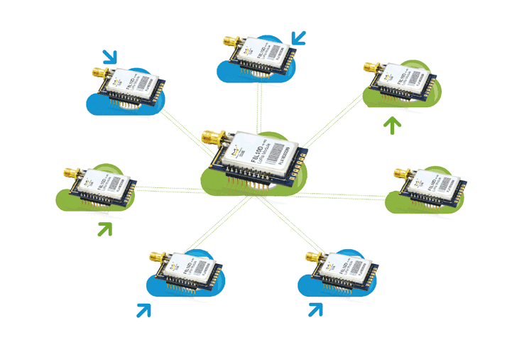

LoraBox
LoraBox 介绍

LoraBox优点
LoRaBox实现信号检测与发送，便于安装。组网算法创新，摒弃现有组网方式，自行研发一套适用于设备管理的LoRa组网算法实现低成本组网。且仅需手机，网页即可对设备使用情况进行实时智能化监管
使用案例1
I创街目前存在众多的用电仪器，如3D打印机、投影仪、电视机、扫描仪、空调以及电脑等诸多用电仪器，管理部门需要实时监测这些仪器的使用情况，从而避免资源浪费或出现安全隐患。LoraBox可对这些用电器进行高效监控。
使用案例２
各大高校寝室用电存在以下问题：当寝室空闲时，可能很多用电器仍在继续运作，近年来各高校因此已发生多起用电器出故障，造成火灾事故．LoraBox可对用电安全做出强有力的保障.